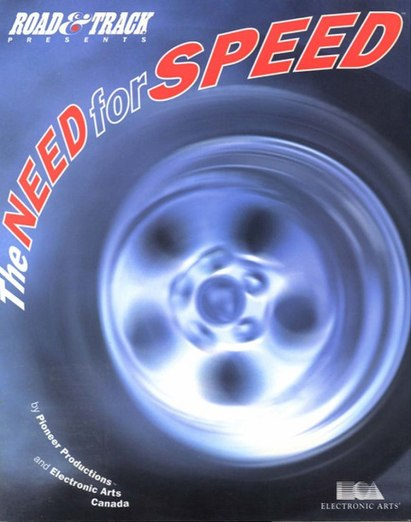
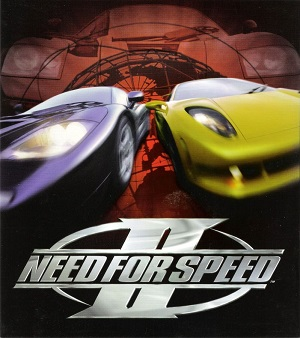
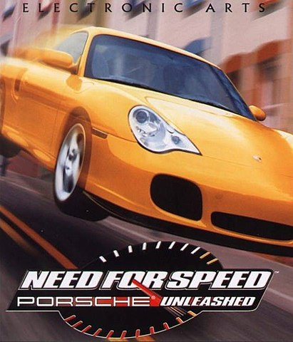
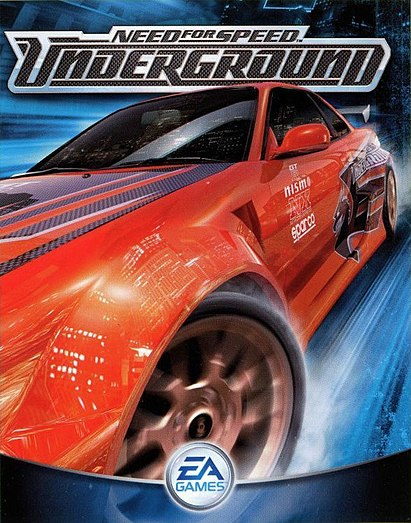
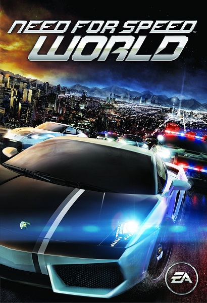
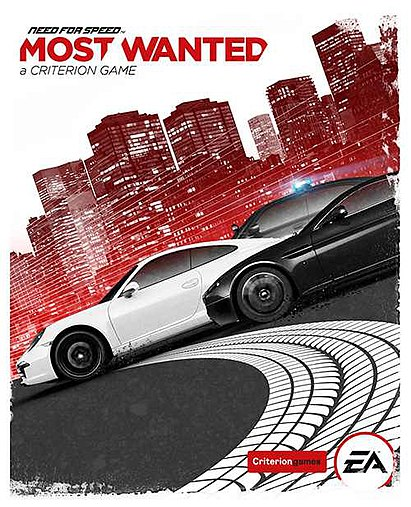

The Need for Speed

Компьютерная игра в жанре аркадного автосимулятора, разработанная студиями
Pioneer Productions и EA
Canada и изданная компанией Electronic Arts для игровой приставки 3DO в 1994 году. Впоследствии игра
была портирована на другие платформы, такие как PlayStation, Sega Saturn и персональные компьютеры.
В 1995 году было выпущено специальное издание под названием The Need for Speed Special Edition. Это
первая часть серии Need for Speed.
Need for Speed II

Компьютерная игра серии Need for Speed в жанре аркадных автогонок,
разработанная студией EA Canada и изданная компанией Electronic Arts в 1997 году для игровой
приставки PlayStation и персональных компьютеров под управлением Windows[1]. Игра является сиквелом
The Need for Speed 1994 года. Специальная версия была выпущена осенью того же года для Windows под
названием Need for Speed II Special Edition (SE).
Need for Speed: Porsche Unleashed

Компьютерная игра серии Need for Speed, разработанная студией EA Canada
и изданная компанией Electronic Arts в 2000 году для консоли PlayStation и компьютеров под
управлением Windows. В 2004 году игра была издана для портативной игровой консоли Game Boy Advance.
13 ноября 2003 года в Германии было выпущено ограниченное издание Porsche 40 Jahre 911. В отличие от
предыдущих частей серии, Need for Speed: Porsche не была выпущена в Японии. Игра полностью посвящена
автомобилям Porsche.
Need for Speed: Underground

Компьютерная игра серии Need for Speed в жанре аркадных автогонок,
разработанная студией EA Black Box и изданная компанией Electronic Arts для игровых консолей и
персональных компьютеров в 2003 году. В России Need for Speed: Underground была издана компанией
«Софт Клаб» первоначально с русской документацией, а с 2006 года — полностью на русском языке. В
марте 2005 года игра была выпущена для аркадных автоматов.
Need for Speed World

Многопользовательская компьютерная игра серии Need for Speed, изданная
компанией Electronic Arts в 2010 году для персональных компьютеров под управлением Windows.
Разработка велась студиями EA Black Box и EA Singapore, позднее разработка и поддержка перешла к
PopCap Games и QuickLime (позднее эти студии были расформированы и осталась лишь группа, которая
поддерживала игру и серверы). Need for Speed: World переведена на несколько языков, включая русский.
Композитор — Мик Гордон.
Need for Speed: Most Wanted

Компьютерная игра серии Need for Speed в жанре аркадных автогонок,
разработанная британской студией Criterion Games и изданная компанией Electronic Arts для игровых
консолей, персональных компьютеров и мобильных устройств в 2012 году. В следующем году состоялся
выпуск для игровой приставки Wii U под названием Need for Speed: Most Wanted U. Игра 2012 года
является перезапуском Need for Speed: Most Wanted 2005 года.